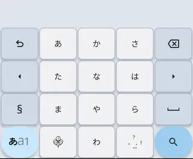

Sumire Japanese Keyboard Lite F-Droid
أدوات النظام
Sumire is a Japanese keyboard for people who want local-first input and predictable behavior. Typing, conversion, personalization, and learning data stay on the device. The Lite F-Droid build focuses on the core keyboard experience: - kana and romaji input with Japanese candidate conversion - user d
✓ ترخيص مفتوح (MIT) · آخر تحديث: 2026-11-20
1.7.160-lite-fdroidالإصدار
55.7 MBالحجم
MITالرخصة
Open in Kanzتحميل APK (55.7 MB)
Download APK
SHA-256: 45c51e0c46f34e8f1ae7cf50f9023051f110ccfd0b214c95355884df5cba15ca


تطبيقات تانية لنفس المطوّر (2)
More apps from this developer: com.kazumaproject
امسح الكود لفتح صفحة التطبيق
Scan to open this app page
لو كنز مش متثبت عندك: نزّل متجر كنز.
Not installed? Get the Kanz store.